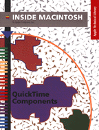

Inside Macintosh: QuickTime Components
Inside Macintosh: QuickTime Components describes the components that are provided by Apple as part of QuickTime. You should read this book if you are developing an application that uses QuickTime components, or if you are developing a component that will be used by QuickTime applications. This book tells you how toTo use this book, you must be familiar with QuickTime, as described in Inside Macintosh: QuickTime, and with the Component Manager, as described in Inside Macintosh: More Macintosh Toolbox. If your component is going to play movies or compress images, you should be familiar with QuickDraw and Color QuickDraw, described in Inside Macintosh: Imaging with QuickDraw.
- provide timing signals for QuickTime applications
- compress and decompress images and sequences of images
- play movies using a standard human interface
- use a sequence grabber to get digitized video and sound data and write it into QuickTime movies
- supply an interface between a sequence grabber component and the devices that digitize video and sound data
- retrieve data from a device that produces digitial video
Availability: Click below to obtain Inside Macintosh: QuickTime Components in any of the following formats.

Printed 
Acrobat (3089K) 
Apple DocViewer (2999K).
Book Contents
- Figures and Listings
- Preface - About This Book
- Chapter 1 - Overview
- Chapter 2 - Movie Controller Components
- Chapter 3 - Standard Image-Compression Dialog Components
- Chapter 4 - Image Compressor Components
- Chapter 5 - Sequence Grabber Components
- Chapter 6 - Sequence Grabber Channel Components
- Chapter 7 - Sequence Grabber Panel Components
- Chapter 8 - Video Digitizer Components
- Chapter 9 - Movie Data Exchange Components
- Chapter 10 - Derived Media Handler Components
- Chapter 11 - Clock Components
- Chapter 12 - Preview Components
- Glossary